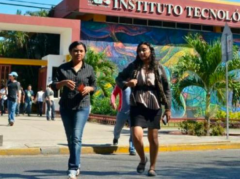

Bienvenidos a nuestro sitio web
La comunidad del Instituto Tecnólogico de Mérida les da la más cordial bienvenida a esta Página Web, donde podrá encontrar enformación que le puede ser de gran utilidad.
Una de las metas propuestas al brindar este servicio es que todas aquellas personas que deseen consultar aspectos sobre la institución, carreras que ofrece, actividades, eventos, servicios generales, becas, reglamento de los estudiantes, o simplemente temas diversos; puedan encontrar aquí todo lo que necesiten.
OBJETIVO

Formar profesionistas líderes, analíticos, críticos y creativos con visión estratégica y amplio sentido ético, capaces de diseñar, implementar y administrarinfraestructura computacional para aportar soluciones innovadoras en beneficio de la sociedad, en un contexto global, multidisciplinario y sustentable
CAMPO DE TRABAJO

Empresas y organismos en todos los campos de la actividad económica, gubernamental y de educación, en donde se puedan optimizar los procesos al automatizar el manejo de la información, al desarrollar infraestructura de redes y porporcionar soluciones en las áreas de la tecnología computacional.
MATERIAS
 Semestre 1
Semestre 1
- Cálculo diferencial
- Fundamentos de Programación
- Matemáticas Discretas
- Taller de Administración
- Fundamentos de Investigación
Semestre 2
- Cálculo Integral
- Programación Orientada a Objetos
- Contabilidad Financiera
- Química
- Probabilidad y Estadística
Semestre 3
- Cálculo vectorial
- Estructura de datos
- Cultura Empresarial
- Sistemas Operativos
- Investigación de operaciones
Semestre 4
- Ecuaciones Diferenciales
- Topicos avanzados de programación
- Fundamentos de base de datos
- Taller de sistemas operativos
- Metodos numericos
Nombre del Alumno: Ana Laura Ayil Angulo
Materia: Programación Web
Grupo: 7SB